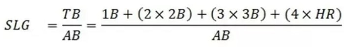
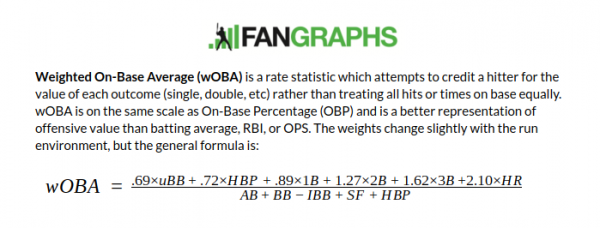

Hitting a baseball is undoubtedly one of the most difficult things to do in all of sports. The average velocity of fastballs in 2021 was around 94 mph and multiple pitchers can dial it up to around 100 mph. This means hitters have less than a split second to locate the ball out of the pitcher’s hand, decide if they want to swing or not, and then execute a swing to make contact with the ball. Not to mention, pitchers can mix in sliders and curveballs that break and come in at different speeds. Simply making contact with the ball can be considered an impressive feat.
To make matters worse, sometimes a hitter can make solid contact, hit the ball hard, and still record an out. They can do everything right, but still see no results. In other words, they can get unlucky.
Luckily for us (pun intended), there are a few different ways we can measure luck, or lack thereof, across Major League Baseball.
Expected vs. Actual StatisticsBatting average (BA) is by far the most traditional and well-known offensive statistic in baseball. It is calculated by dividing the total number of hits by the total number of at-bats. For example, a player who hits the ball in 3 out of 10 at-bats has a batting average of .300. But batting average only tells us the result. It lacks the meaningful context of what occurred in those at-bats.
Expected batting average (xBA) measures the likelihood of a batted ball becoming a hit. Every batted ball is assigned an xBA based on how often comparable batted balls have fallen for hits. The two main factors are launch angle and exit velocity. If a batted ball is assigned an xBA of .550, it means balls hit with that same combination of launch angle and exit velocity have become hits 55% of the time since 2015 when Statcast began tracking batted ball data.
Expected stats are more indicative of a player’s skill because it removes defense from the equation. It only measures what a hitter is in control of: how well the ball is struck. They have no control over what happens to the ball after it is put in play.
Understanding expected statistics can help us identify who is squaring the ball up (high xBA) but seeing little or no results (low BA). We can find the unluckiest hitters in 2021 by analyzing the difference in batting average and expected batting average.
Using the difference in batting average and expected batting average, we can see here that Max Kepler had a league-leading -.044 difference. He was expected to receive a hit around 25% of the time (.255 xBA), but only succeeded around 21% of the time (.211 BA). From this angle, we could conclude that Max Kepler was the unluckiest hitter in 2021. Or can we?
There are two more expected statistics worth looking at because batting average has two major flaws. First, it ignores the other ways a player can reach base safely (walk or hit by pitch). It doesn’t account for a major part of offensive production. Second, it treats all hits as equal even though some hits are more valuable than others. A home run is vastly more valuable than a single, but they both go down in the book as just a hit when looking at batting average. Extra-base hits should be weighted more than singles. That is where slugging percentage (SLG) comes into play.
Expected Slugging PercentageSlugging percentage applies more weight to extra-base hits relative to singles. It is calculated by dividing the total number of bases by the number of at-bats. Slugging percentages are a better indicator of a player’s power and ability to hit for extra bases. Expected slugging percentage (xSLG) is calculated using the same factors as expected batting average, but it also takes into account the weights for each hit type.
Expected slugging percentage gives us a better understanding of a hitter’s offensive production because it measures the value of each hit. However, like batting average, it once again excludes walks and hit-by-pitches. There is still one more metric that gives us the full context of a hitter’s production.
Expected Weighted On-Base AverageWeighted on-base average (wOBA) takes into account every aspect of hitting and weights each outcome properly. Expected batting average and slugging percentage only looked at each at-bat outcome, whereas expected weighted on-base average (xwOBA) takes into account all other plate appearance outcomes. For these reasons, it fully measures a hitter’s quality of contact and ability to reach base. It is a bit more difficult to understand than the other statistics, so here is an explanation and the formula.
Now that we have three different metrics to analyze luck, we can pick out the players that show up most often. Carlos Santana, Elvis Endrus, Jorge Soler, and Tommy Pham appear in the top 10 for all categories. Santana finished in the top 3 for each and leads in wOBA difference, the most important metric. But, for the sake of fairness, let’s look at some other statistics to break our tie.
Another way to measure unluckiness at the plate is to analyze hard hit outs. Statcast defines a “hard-hit ball” as one with an exit velocity greater than or equal to 95 mph. Hard-hit balls had a mean xBA of .495 in 2021, meaning they fell for hits almost 50% of the time.
Not only does Santana have some of the biggest differences in expected vs. actual stats, he also comes in with the 8th most hard-hit outs in 2021. Additionally, he has the lowest batting average among the top 10 hard-hit outs leaders. Given all that we now know, we can infer that Carlos Santana was one of, if not the unluckiest hitter in 2021.